library(forecast)
library(ggplot2); theme_set(theme_bw())
library(seasonal)
library(lmtest)
library(timeDate)
library(knitr)
library(tseries)Series Temporales: Análisis de la serie Pasajeros en transporte urbano
Antecedentes
En este curso hemos aprendido a describir una serie temporal, estimar su proceso generador de datos y realizar predicciones, tanto puntuales como por intervalo. Para ello, hemos estudiado los principales aspectos teóricos relacionados con las series temporales, sus componentes, modelos de ajuste, predicción, criterios de calidad, etc. También hemos practicado la aplicación de estos conceptos a través de diferentes series temporales: Títulos publicados, Nacimientos, Aforo de vehículos, Consumo de alimentos per cápita, Exportaciones y Pernoctaciones de turistas extranjeros, entre otras.
El programa de estadística utilizado R ha servido con dos propósitos entremezclados durante el curso. En primer lugar, para ilustrar los aspectos teóricos que se iban presentando. En este caso, R tenía un uso más instrumental y en general se mostraba la salida obtenida sin enseñar el código. En segundo lugar, hemos aprendido a usar R para analizar y predecir una serie temporal real. Los ejemplos vistos en cada tema y el ejemplo transversal utilizado durante el curso de Pernoctaciones en alojamientos turísticos de turistas extranjeros son buenos exponentes de este uso de R.
Ahora bien, ambos usos de R –ilustrar aspectos teóricos y analizar una serie– han quedado distribuidos a lo largo de los temas. El ejemplo Pasajeros en transporte urbano, desarrollado aquí, tiene como objetivo disponer, en un único documento y de forma organizada, del análisis completo de una serie temporal. En este informe se mostrará siempre el código completo empleado para las salidas, se hará hincapié en la aplicación práctica de los conceptos teóricos, se insistirá en los diferentes enfoques que se pueden y deben emplear para analizar una serie temporal y se justificarán todas las decisiones adoptadas.
Este es, por tanto, un ejemplo que se extiende más allá de lo que un informe de análisis de una serie temporal precisa.
Para el código de este ejemplo se utilizarán funciones de las librerías básicas de R y de otras que se pueden encontrar en las siguientes librerías:
1 Pasajeros en transporte urbano
La serie que se va a analizar corresponde al número de pasajeros en transporte urbano en España. Es una serie mensual que puede ser consultada en el Instituto Nacional de Estadística y para la que se dispone de datos desde enero de 1996 hasta diciembre de 2023.
Por transporte urbano de pasajeros se hace referencia a los servicios de transporte terrestre de pasajeros, urbano y suburbano, por itinerarios regulares, con horario establecido y con paradas fijas, realizados por autobuses, tranvías, trolebuses, metros y metros ligeros. También se incluyen las líneas de servicio al aeropuerto y a las estaciones y la explotación de funiculares y teleféricos si forman parte de los sistemas de tránsito urbanos e interurbanos.
Los datos de la serie, que denominaremos de forma abreviada Pasajeros, han sido descargados en el fichero Pasajeros.csv y aunque en origen la unidad es miles de pasajeros, la cambiaremos a millones de pasajeros.
meses <- c("Ene", "Feb", "Mar", "Abr", "May", "Jun",
"Jul", "Ago", "Sep", "Oct", "Nov", "Dic")
Pasajeros <- read.csv2("./series/Pasajeros.csv",
header = TRUE)
Pasajeros <- ts(Pasajeros[, 1]/1000,
start = 1996,
freq = 12)2 Descriptiva
La Figura 1 muestra la evolución de la serie Pasajeros en transporte urbano desde 1996 hasta 2023. Se observa que la tendencia de la serie ha seguido el ciclo económico. Durante el periodo de crecimiento de finales del siglo pasado y principios de este, el número de pasajeros en transporte urbano creció de forma sostenida. Con la Gran Recesión (2008 - 2014) se observa un cambio en la tendencia y el número de pasajeros se reduce. No es hasta el final la crisis, en 2014, que la tendencia vuelve a cambiar y pasar a ser creciente de nuevo. Al final del periodo se observa el tremendo efecto que tuvo sobre la serie el confinamiento por la Covid-19 (marzo a junio de 2020) y el incremento del trabajo en casa, con una brusca caída y lenta recuperación. Parece que en 2023 se ha recuperado el volumen de pasajeros prepandemia.
autoplot(Pasajeros, colour = "darkblue",
xlab = "",
ylab = "Millones de pasajeros",
main = "") +
scale_x_continuous(breaks= seq(1996, 2024, 2))
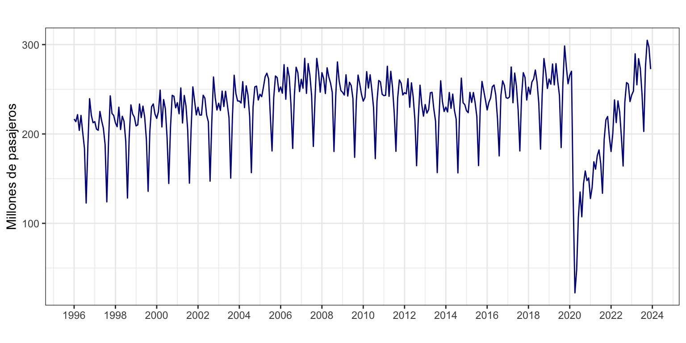
La serie presenta una acusada estacionalidad, causada principalmente por la distribución de las vacaciones a lo largo de un año y el número de días laborables de cada mes. Pensemos que el principal uso del transporte urbano es el traslado hasta y desde el lugar de trabajo o estudio, seguido del ocio (ir de compras, al cine, a restaurantes, etc.). Cada año el mes con menor número de pasajeros es agosto (los valles en la Figura 1) por estar la mayoría de la gente de vacaciones, fuera de su lugar de residencia habitual, y no usar tan intensamente el transporte urbano.
El esquema parece ser aditivo porque no se aprecia que la amplitud estacional se amplíe conforme el número de pasajeros aumenta.
En los siguientes epígrafes se hará una descriptiva de la tendencia y la estacionalidad más detallada.
Serie recortada
Como el propósito de este ejemplo es didáctico, vamos a simplificar el análisis y cortar la serie Pasajeros hasta diciembre de 2019, antes de la Covid-19. A lo largo de los siguientes epígrafes usaremos la serie recortada.
Pasajeros <- window(Pasajeros, end = c(2019, 12))
2.1 Análisis de la tendencia
Si anualizamos la serie podemos, por un lado, identificar mejor en que años se producen los cambios en la tendencia y, por otro lado, poner cifras al volumen de pasajeros en transporte urbano.
PasajerosAnual <- aggregate(Pasajeros, FUN = sum)
autoplot(PasajerosAnual, colour = "darkblue",
xlab = "",
ylab = "Millones de pasajeros",
main = "") +
scale_x_continuous(breaks= seq(1996, 2020, 2))
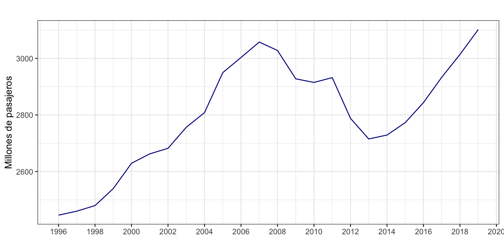
La Figura 2 muestra el volumen anual de pasajeros en transporte urbano. El crecimiento continuado, posiblemente iniciado antes de 1996 y que permitió superar los 3000 millones de pasajeros en 2007, se ve interrumpido con el inicio de la Gran Recesión. La caída en el número de pasajeros se interrumpe en 2014, año que marca la salida de esta crisis en España y el inicio de la recuperación en el serie. En 2019 se superaron los 3100 millones de pasajeros.
El incremento en el uso del transporte urbano observado antes y después de la crisis puede tener distintas causas: un uso más intensivo del transporte urbano en detrimento de otros medios de transporte, una reorganización de los servicios de transporte urbano que haya mejorado la conectividad dentro de los municipios, o un aumento en el número de líneas de autobús, tranvía o metro en determinadas ciudades.
La causa del repunte aislado observado el año 2011, en plena crisis, fue una ligera recuperación de la economía que tuvo lugar a finales de 2010 y principios de 2011.
2.2 Análisis de la estacionalidad
La principal causa de la estacionalidad observada en la serie es la estructura vacacional de la sociedad, especialmente caracterizada por las vacaciones de verano (julio a septiembre) y las vacaciones de Semana Santa (en marzo y/o abril, según el año). Además, debido a que el transporte urbano se usa principalmente para ir a trabajar o al centro de educación, también influye el número de días laborables del mes. Por ejemplo, en 2017 el mes de junio tuvo 22 días laborables, mientras que en 2019 tuvo 20 días laborables. Esta diferencia de dos días tendrá un efecto sobre el volumen de pasajeros.
El número de días laborables de un mes viene marcado por los fines de semana del mes y por las festividades nacionales. Es cierto que el sábado se trabaja en diversos sectores (comercio, ocio, distribución) pero la caída en el número de trabajadores respecto de los días entre semana (lunes a viernes) es muy notable. También es cierto que, además de las festividades nacionales, hay muchas festividades autonómicas o municipales que podrían afectar al volumen de pasajeros en transporte urbano. Por ejemplo, las festividades regionales en comunidades como Madrid o Cataluña pueden tener un efecto significativo sobre la serie Pasajeros. Sin embargo, las festividades no nacionales no se van a tener en cuenta.
Por tanto, para realizar un análisis detallado de la estacionalidad, es necesario crear una serie con el número de días laborables de cada mes. Además, esta serie se usará más adelante para modelizar y predecir la serie Pasajeros.
Días laborables de cada mes
La librería timeData proporciona una serie de funciones que permiten definir un calendario de festividades, identificar los fines de semana y, a partir de aquí, crear la serie de días laborables (véase código más abajo).
Con
timeCalendarse definen las festividades nacionales que vamos a considerar: Año nuevo (1 de enero), Reyes (6 de enero), Viernes Santo (fecha variable), Día del Trabajo (1 de mayo), Día de la Asunción (15 de agosto), Día de la Hispanidad (12 de octubre), Día de Todos los Santos (1 de noviembre), la Constitución (6 de diciembre) la Inmaculada Concepción (8 de diciembre) y Navidad (25 de diciembre).Por claridad, cada festivo se ha definido de forma independiente para después crear una variable con todas las festividades (FestivosNacionales).
El rango para todos los cálculos va desde 1996 hasta 2024, que incluye el rango de la serie Pasajeros más cinco años de predicción.
La función utilizada
Easterde la libreríatimeDatedifiere de la funcióneasterdeforecast.
AnoNuevo <- timeCalendar(d = 1, m = 1, y = 1996:2024)
Reyes <- timeCalendar(d = 6, m = 1, y = 1996:2024)
ViernesSanto <- Easter(1996:2024, shift = -2)
DiaTrabajo <- timeCalendar(d = 1, m = 5, y = 1996:2024)
Asuncion <- timeCalendar(d = 15, m = 8, y = 1996:2024)
Hispanidad <- timeCalendar(d = 12, m = 10, y = 1996:2024)
TodoSantos <- timeCalendar(d = 1, m = 11, y = 1996:2024)
Constitucion <- timeCalendar(d = 6, m = 12, y = 1996:2024)
Inmaculada <- timeCalendar(d = 8, m = 12, y = 1996:2024)
Navidad <- timeCalendar(d = 25, m = 12, y = 1996:2024)
FestivosNacionales <- c(AnoNuevo, Reyes, ViernesSanto,
DiaTrabajo, Asuncion, Hispanidad, TodoSantos,
Constitucion, Inmaculada, Navidad)- A continuación, con
timeSequencese crea una serie diaria desde el 1 de enero de 1996 hasta el 31 de diciembre de 2024.
fechaDiaria <- timeSequence(from = "1996-01-01", to = "2024-12-31")- Las siguientes líneas eliminan de la serie diaria los festivos y los fines de semana, (función
isBizday), para después dar a esta nueva serie el formato año-mes eliminando el día. De esta forma, la serie de días laborales tendrá el mismo identificador para todos los días del mismo mes.
biz <- fechaDiaria[isBizday(fechaDiaria, holidays = FestivosNacionales)]
bizdays <- format(biz, format = "%Y-%m")- Ahora se crea una tabla que, por la naturaleza de la serie de días laborales, tendrá para cada año-mes el numero de días laborables. Por último fechamos la tabla, que es nuestra serie de días laborables y mostramos algunos datos.
DiasLaborables <- table(bizdays)- Las últimas líneas de código dividen la serie en el periodo muestral y el de predicción.
DiasLaborables <- ts(DiasLaborables, start = 1996, frequency = 12)
subset(DiasLaborables, start = 289) #Mostramos solo los 5 últimos años Jan Feb Mar Apr May Jun Jul Aug Sep Oct Nov Dec
2020 21 20 22 21 20 22 23 21 22 21 21 21
2021 19 20 23 21 21 22 22 22 22 20 21 21
2022 20 20 23 20 22 22 21 22 22 20 21 20
2023 21 20 23 19 22 22 21 22 21 21 21 18
2024 22 21 20 22 22 20 23 21 21 23 20 20pDiasLaborables <- subset(DiasLaborables, start = length(DiasLaborables) - 59)
DiasLaborables <- subset(DiasLaborables, end = length(DiasLaborables) - 60)Es conveniente indicar que la identificación de las festividades nacionales dista de ser perfecta por varios motivos:
- algunos festivos nacionales si caen en domingo, se pasan a lunes (por ejemplo Reyes y la Inmaculada de 2019), aspecto que no se ha tenido en cuenta.
- algunos festivos nacionales pueden ser sustituidos por otros días por las Comunidades Autónomas, por ejemplo Reyes o Jueves Santo.
Análisis gráfico de la estacionalidad
Veamos ahora una descriptiva detallada de la estacionalidad de la serie Pasajeros, haciendo especial hincapié en el efecto de las vacaciones (verano y Semana Santa) y el número de días laborables. Para ello, mostraremos gráficamente las subseries definidas por el mes tanto para Pasajeros como para Pasajeros por día laborable, esta segunda resultado de dividir Pasajeros por DiasLaborables.
PasajerosDL <- Pasajeros/DiasLaborables
ggsubseriesplot(Pasajeros) +
ylab("Millones de pasajeros") +
xlab("") +
ggtitle("")
ggsubseriesplot(PasajerosDL) +
ylab("Millones de pasajeros") +
xlab("") +
ggtitle("")
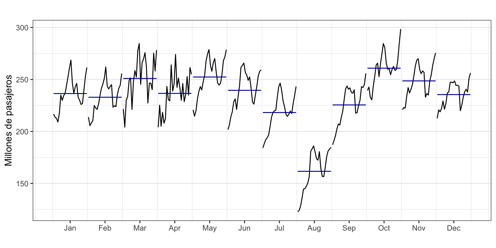
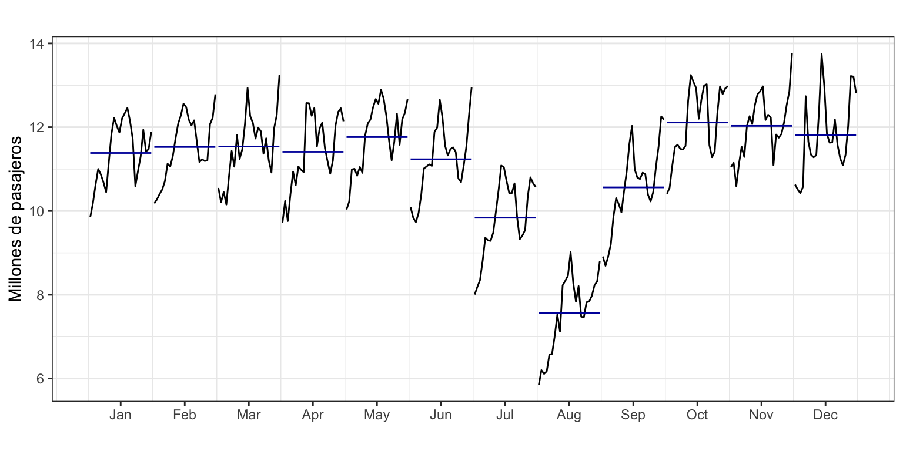
La Figura 3 muestra para cada mes la serie de pasajeros (total o por día laborable) y el valor medio (línea azul horizontal). En ambos paneles se identifica perfectamente el efecto de los periodos vacacionales sobre el transporte urbano de pasajeros. En las vacaciones de verano se observa una fuerte caída en el número de pasajeros, especialmente en agosto y, en menor medida, en julio y septiembre. Por otro lado, las subseries de marzo y abril muestran mucha más irregularidad que las de otros meses debido a que el volumen de pasajeros depende de cómo haya caído la Semana Santa. Cada año el mes en que caiga la Semana Santa presentará un volumen de pasajeros inferior al esperado. Diciembre, para ser un mes de 31 días, presenta también un reducido número de pasajeros debido a las vacaciones navideñas.
La Figura 3 a) muestra el efecto estacional total debido al número de días del mes y de días laborales. Por ejemplo, en febrero, el mes con menos días y por tanto con menos días laborales, en media se transportan menos pasajeros, comparado con enero o marzo. Octubre, un mes con 31 días, muestra un volumen medio de pasajeros mayor que noviembre de 30 días.
En la Figura 3 b) se ha eliminado el efecto de los días laborables al trabajar con la serie de pasajeros transportados por día laborable. Si la comparamos con la Figura 3 a), destaca que las diferencias entre las medias (lineas azules) se han reducido: prácticamente no hay diferencias entre los meses de enero a junio, o entre los meses de octubre a diciembre.
Cabría pensar que al excluir de la serie de días laborables la Semana Santa, en la Figura 3 b) las subseries de marzo y abril serían tan suaves como las observadas para otro meses, pero no es así. Claramente la simple exclusión de los festivos nacionales de Semana Santa no es suficiente para recoger bien su efecto sobre el transporte urbano. La razón hay que buscarla en las vacaciones escolares de este periodo, que en algunas comunidades autónomas tiene lugar durante la propia semana de Semana Santa, mientras que en otras comunidades tiene lugar en la semana posterior. De esta forma, el efecto sobre el transporte urbano de Semana Santa no es homogéneo en el territorio nacional y resulta difícil incluirlo en el análisis de la serie Pasajeros.
Descomposición y estimación de la estacionalidad
Podemos obtener la componente estacional para poder valorarla numéricamente y ver que efecto tiene el número de días laborables. Previamente, debemos determinar el esquema, aditivo o multiplicativo, de la serie.
La gráfica media-varianza (Figura 4) refuerza la impresión que se obtenía de la gráfica de la serie (Figura 1), que el esquema es aditivo.
MediaAnual <- aggregate(Pasajeros, FUN = sum)
DesviacionAnual <- aggregate(Pasajeros, FUN = sd)
ggplot() +
geom_point(aes(x = MediaAnual, y = DesviacionAnual), size = 2) +
xlab("Total pasajeros por año") +
ylab("Desviación típica intraanual de pasajeros") +
ggtitle("")
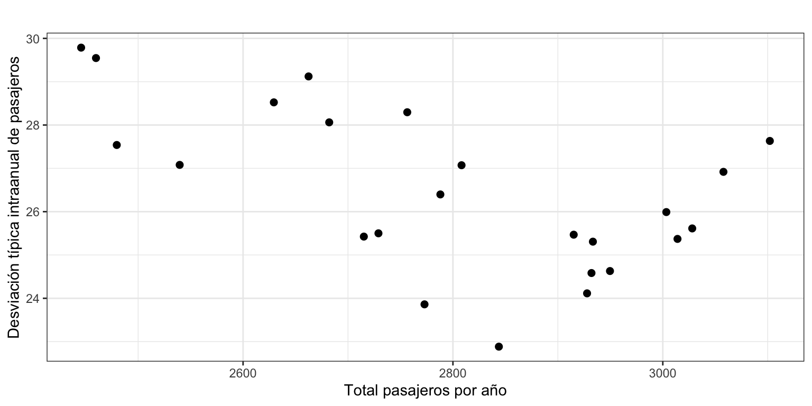
Ahora vamos a proceder a descomponer tanto la serie original como la serie de pasajeros por día laboral. Dado que la serie presenta un esquema aditivo, usaremos el método de descomposición por regresiones locales ponderadas, asumiendo una componente estacional constante y considerando la presencia de posibles valores extremos.
La Tabla 1 pone en cifras el efecto estacional sobre los Pasajeros (primera columna): en agosto la caída en el número de pasajeros, respecto de la media anual, se cifra en 72 millones de pasajeros. En julio, septiembre y en menor medida abril también el uso del transporte urbano es inferior a la media anual, en el caso de los dos primeros meses por las vacaciones de verano y en abril debido a ser el mes en que con más frecuencia cae la Semana Santa. Por otro lado, destaca el elevado número de pasajeros en los meses de marzo, mayo y octubre, por tener 31 días.
PasajerosStl <- stl(Pasajeros,
s.window = "periodic",
robust = TRUE)
PasajerosDLStl <- stl(PasajerosDL,
s.window = "periodic",
robust = TRUE)
datos <- cbind(seasonal(PasajerosStl)[1:12], seasonal(PasajerosDLStl)[1:12])
colnames(datos) <- c("Pasajeros", "Pasajeros por día laborable")
rownames(datos) <- meses
kable(datos,
digits = 2)| Pasajeros | Pasajeros por día laborable | |
|---|---|---|
| Ene | 4.70 | 0.41 |
| Feb | 0.34 | 0.53 |
| Mar | 24.02 | 0.53 |
| Abr | -2.17 | 0.39 |
| May | 19.67 | 0.69 |
| Jun | 6.45 | 0.18 |
| Jul | -15.30 | -1.21 |
| Ago | -71.82 | -3.52 |
| Sep | -8.31 | -0.53 |
| Oct | 26.79 | 1.02 |
| Nov | 14.70 | 0.94 |
| Dic | 0.93 | 0.55 |
Tras la corrección por el número de días laborales, el efecto estacional es más suave (véase la segunda columna en la Tabla 1). Ahora, los meses de febrero y marzo tienen un efecto similar, al igual que octubre y noviembre. También se observa que las diferencias entre marzo y abril se han reducido.
Análisis de la intervención
Ya hemos realizado una descripción detallada de las principales componentes de la serie, tendencia y estacionalidad. Ahora vamos a analizar, aunque sea de forma gráfica, el error y tener ya una primera impresión sobre la relevancia de la componente de intervención en Pasajeros.
error <- remainder(PasajerosStl)
sderror <- sd(error)
autoplot(error,
xlab = "",
ylab = "Error",
main = "",
colour = "darkblue") +
geom_hline(yintercept = c(3, 2, -2, -3)*sderror,
colour = c("red", "green", "green", "red"),
lty = 2) +
scale_x_continuous(breaks= seq(1996, 2020, 2))
fechasMes <- format(seq(from = as.Date("1996-01-01"),
to = as.Date("2019-12-01"),
"month"),
"%Y-%m")
fechasMes[abs(error) > 3 * sderror][1] "1997-03" "1997-04" "2002-03" "2002-04" "2005-04" "2008-03" "2008-04"
[8] "2013-03" "2013-04"
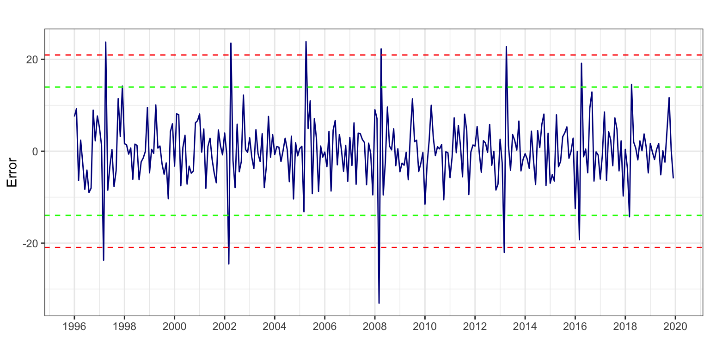
La Figura 5 muestra el error de la descomposición y los intervalos de confianza al 95% (líneas verdes) y el 99.7% (líneas rojas). Se aprecian claramente múltiples valores extremos (superan las tres desviaciones típicas) en forma de compensación (dos errores extremos consecutivos de signo opuesto) que corresponden a los meses de marzo y abril de 1997, 2002, 2008 y 2013, y otro valor extremo en abril de 2005. Además, en marzo y abril de 2016 hay dos valores atípicos. Todos los valores identificados corresponden a los meses de marzo y abril, y en todos los casos el error negativo tiene lugar en marzo y el positivo en abril. Si miramos un calendario, veremos que tienen lugar en los años en que la Semana Santa cayó en marzo.
La prueba de Tukey solo identifica como meses atípicos los marzo de 2002 y 2008.
atipicos <- tsoutliers(error)
fechasMes[atipicos$index][1] "2002-03" "2008-03"Si repetimos este análisis para la serie de Pasajeros por día laborable, los resultados son bien diferentes (véase Figura 6). Ahora solo se detectan dos valores extremos en diciembre de 2000 y 2006. También destaca el error de diciembre de 2017. Los errores en diciembre se dan cuando Navidad cae en lunes, de forma que la caída en el transporte urbano debida a la nochebuena coincide con la de cualquier domingo. Así, estos meses de diciembre presentan más transporte urbano que los meses de diciembre donde la nochebuena cae entre semana.
error <- remainder(PasajerosDLStl)
sderror <- sd(error)
autoplot(error,
xlab = "",
ylab = "Error",
main = "",
colour = "darkblue") +
geom_hline(yintercept = c(3, 2, -2, -3)*sderror,
colour = c("red", "green", "green", "red"),
lty = 2) +
scale_x_continuous(breaks= seq(1996, 2020, 2))
fechasMes[abs(error) > 3 * sderror][1] "2000-12" "2006-12"
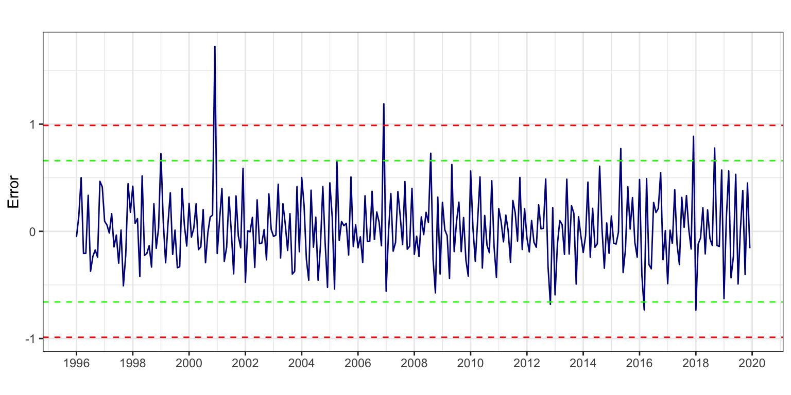
2.3 Conclusión
La serie de pasajeros en transporte urbano muestra una tendencia creciente solo interrumpida entre 2008 y 2014 debido a la Gran Recesión.
Los principales determinantes de la estacionalidad de la serie Pasajeros son los grandes periodos vacacionales en España (Semana Santa y verano) y el número de días laborales del mes. Así, en la serie Pasajeros corregida por días laborables la componente estacional se ha suavizado y prácticamente queda determinada por las vacaciones.
La intervención tiene lugar en los meses de marzo y abril debido al carácter móvil de la Semana Santa, y en diciembre cuando el día de Navidad cae en lunes, de forma que la caída de pasajeros de nochebuena se solapa con la de cualquier domingo.
3 Un predicción rápida y sencilla
En los siguientes epígrafes aplicaremos técnicas de predicción crecientes en complejidad conceptual y computacional, y que requerirán de más hipótesis para su correcta aplicación. Aunque actualmente más complejidad no siempre implica más recursos (temporales, humanos, informáticos), cabe preguntarse si vale la pena. Así, más por una cuestión teórica que práctica, veamos cual sería la calidad de las predicciones si aplicamos una metodología sencilla, en este caso el método ingenuo con estacionalidad.
Los indicadores de calidad de ajuste (predicción intramuestral a un periodo vista) indican que repetir la última observación del mismo mes puede ser suficiente para obtener una buena predicción a corto plazo. En media el error es de 11 millones de pasajeros (RMSE), o un 3.5%. A largo plazo, las predicciones pueden perder calidad rápidamente puesto que no capturan ningún tipo de tendencia. La Figura 7 muestra como la predicción del número de pasajeros para los años 2020 a 2024 se mantiene estacionaria y no refleja la tendencia creciente observada desde 2014.1
PasajerosSnaive <- snaive(Pasajeros,
h = 60)
accuracy(PasajerosSnaive) ME RMSE MAE MPE MAPE MASE ACF1
Training set 2.377978 10.96492 8.260812 0.9534372 3.509156 1 -0.01034773autoplot(PasajerosSnaive,
PI = FALSE,
xlab = "",
ylab = "Millones de pasajeros",
main = "") +
scale_x_continuous(breaks= seq(1996, 2024, 2))
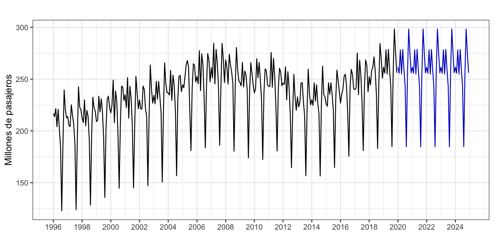
Este será nuestro punto de referencia. Cabe esperar que en los siguientes epígrafes, donde aplicaremos técnicas de Alisado exponencial y modelos Arima, se observe un incremento significativo en la calidad del ajuste.
4 Alisado exponencial
En primer lugar analizaremos la capacidad predictiva del método de Alisado exponencial sobre la serie Pasajeros. Con este fin, ajustaremos el mejor modelo de Alisado y estimaremos los criterios de calidad para el ajuste y las predicciones extramuestrales según el horizonte temporal. Posteriormente veremos si es posible mejorar las predicciones aplicando la transformación logarítmica a Pasajeros y analizando la serie Pasajeros por día laborable.
4.1 Análisis de la serie Pasajeros
Estimación e interpretación
El modelo óptimo, estimado con la función ets sin imponer ninguna restricción, es ETS(M,Ad,A): pendiente aditiva con amortiguamiento, estacionalidad aditiva y residuo multiplicativo. \[y_{t+1} = (l_t + \phi b_t + s_{t+1-m}) \cdot (1 + \varepsilon_{t+1}).\]
PasajerosEts <- ets(Pasajeros)
summary(PasajerosEts) ETS(M,Ad,A)
Call:
ets(y = Pasajeros)
Smoothing parameters:
alpha = 0.1374
beta = 0.017
gamma = 1e-04
phi = 0.9438
Initial states:
l = 203.1964
b = -0.4508
s = 2.0753 14.0423 27.0229 -8.7953 -72.369 -15.0625
6.6935 19.5129 4.2863 18.0168 0.373 4.2039
sigma: 0.0333
AIC AICc BIC
2823.866 2826.408 2889.799
Training set error measures:
ME RMSE MAE MPE MAPE MASE
Training set 0.5929553 7.492818 5.654414 0.1765693 2.447442 0.6844865
ACF1
Training set -0.1434247El valor de \(\phi=\) 0.94 indica que la inclusión de amortiguamiento en el modelo mejora sensiblemente su ajuste a los datos. Por otro lado, \(\gamma\) es técnicamente cero, indicando que el efecto estacional se mantiene constante en el tiempo. Sin embargo, el valor de \(\beta\), reducido pero no nulo, indica que la pendiente cambia en el tiempo de forma muy lenta.
La calidad del ajuste es bastante buena, con un error porcentual del 2.4% o un error de 7.5 millones de pasajeros (RMSE). La aplicación del método de Alisado supone una reducción de un punto en el error porcentual respecto del método ingenuo, o una reducción del RMSE de 3.5 millones de pasajeros. Es decir, el modelo de Alisado exponencial supone una mejora en la calidad del ajuste del 32% respecto del método ingenuo con estacionalidad visto en el epígrafe previo (MASE). El indicador ACF1 revela que las fórmulas usadas para el intervalo de confianza no son válidas.
El efecto estacional, que recordemos se mantiene constante en el tiempo, es prácticamente idéntico al estimado en la descriptiva y viene determinado por los periodos vacacionales y el número de días laborables. Véase la Figura 8.
En verano (julio a septiembre) el uso del transporte urbano es inferior a la media anual, destacando agosto con un descenso de 72 millones de pasajeros. Por el contrario, octubre destaca por ser el mes con mayor incremento en el volumen de pasajeros (27 millones) respecto de la media anual.
PasajerosEtsEst <- PasajerosEts$states[nrow(PasajerosEts$states), 14:3]
names(PasajerosEtsEst) <- meses
round(PasajerosEtsEst, 2) Ene Feb Mar Abr May Jun Jul Ago Sep Oct Nov
4.21 0.37 18.02 4.29 19.51 6.69 -15.06 -72.37 -8.79 27.02 14.04
Dic
2.07 ggplot() +
geom_line(aes(x = 1:12, y = PasajerosEtsEst), colour = "darkblue") +
geom_hline(yintercept = 0, colour = "black", lty = 2) +
ggtitle("") +
xlab("") +
ylab("Efecto estacional") +
scale_x_continuous(breaks= 1:12,
labels = meses)
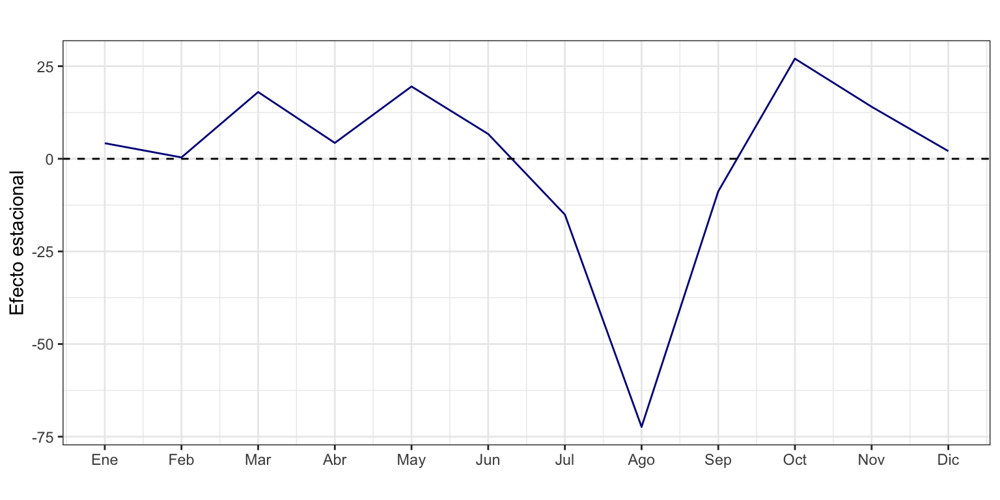
Predicción
Podemos ahora pedir los valores de predicción para los próximos cinco años. No mostramos los resultados numéricos, pero si gráficos (Figura 9). Las predicciones muestran una tendencia creciente amortiguada y, por tanto, no tan acusada como la observada en los años precedentes.
PasajerosEtsPre <- forecast(PasajerosEts,
h = 60)
autoplot(PasajerosEtsPre,
xlab = "",
ylab = "Millones de pasajeros",
main = "")
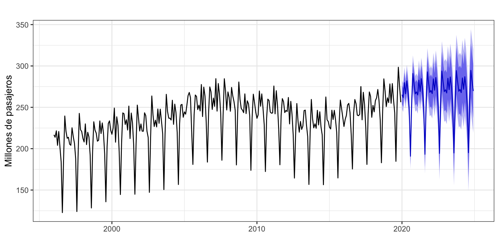
En el año 2020 se esperan 3153 millones de pasajeros, un 1.6% más que en 2019.2
Análisis del error
El residuo del modelo (Figura 10) muestra varios valores que pueden ser considerados como atípicos y que se dan siempre en los meses de marzo y abril para los años donde la Semana Santa recayó en marzo.
error <- residuals(PasajerosEts)
sderror <- sd(error)
autoplot(error,
xlab = "",
ylab = "Error",
main = "",
colour = "darkblue") +
geom_hline(yintercept = c(-3, -2, 2 ,3)*sderror,
colour = c("red", "green", "green", "red"), lty = 2) +
scale_x_continuous(breaks= seq(1996, 2020, 2))
fechasMes[abs(error) > 3 * sderror][1] "2008-03"
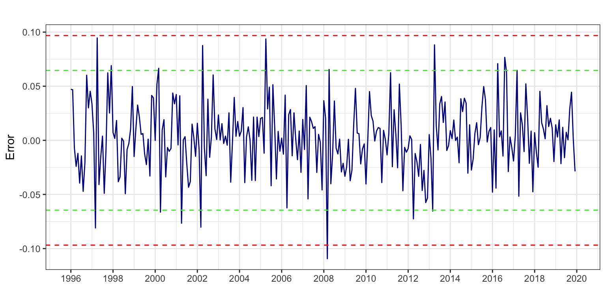
4.2 Otras alternativas de análisis
En la descriptiva se ha visto que la serie de pasajeros por día laborable tiene un comportamiento más suave (la componente estacional era más plana) y presentaba un menor número de valores atípicos que la serie original Pasajeros. Cabe esperar, por tanto, que esta serie presente un mejor ajuste con el método de Alisado exponencial y ofrezca mejores predicciones.
Por otro lado, siempre vale la pena analizar la transformación logarítmica de la serie y ver si ofrece mejores resultados que la serie original. La transformación logarítmica es especialmente eficaz para series no lineales, así que para Pasajeros posiblemente no suponga ningún mejora.
Las transformaciones indicadas en los dos párrafos precedentes son solo dos de las posibles. También se pude analizar la serie de pasajeros por día del mes o la transformación óptima de Box-Cox. La idea es no quedarse con lo inmediato –la serie tal cual nos la han ofrecido–, sino probar otras alternativas. Por ejemplo, la serie de Pasajeros es el agregado del número de pasajeros que viajan en transporte urbano según el tipo de transporte (autobús, metro, tranvía…). Se podría proceder a analizar cada serie por separado (pasajeros en autobús, pasajeros en metro, etc.), para luego agregar los resultados y ver si este enfoque da mejores resultados que el análisis directo de la serie agregada Pasajeros.
En este epígrafe se analizarán tres de las transformaciones indicadas: la transformación logarítmica, los pasajeros por día laborable y los pasajeros por día del mes. El objetivo es ver si es posible mejorar la calidad de las predicciones obtenidas para Pasajeros. Se usará como criterio de bondad el error de las predicciones extramuestrales según el horizonte temporal, obtenido con el procedimiento origen de predicción móvil. Asumiremos que son necesarios 12 años para obtener una buena estimación del modelo y el horizonte temporal se fijará en 12 meses (\(k = 144, h = 12\)). Previamente, hay que crear la serie Pasajeros por día del mes, e identificar el mejor modelo para las series transformadas. Además, para evitar el efecto de meses atípicos sobre el cálculo de la precisión de las previsiones, usaremos como medida de calidad la mediana del error porcentual absoluto.
PasajerosDM <- Pasajeros/monthdays(Pasajeros)
ets(Pasajeros, lambda = 0)$method[1] "ETS(A,Ad,A)"ets(PasajerosDL)$method[1] "ETS(M,Ad,A)"ets(PasajerosDM)$method[1] "ETS(A,Ad,A)"
k <- 144
h <- 12
TT <- length(Pasajeros)
s <- TT - k - h
mapeAlisadoPas <- matrix(NA, s + 1, h)
mapeAlisadoLogPas <- matrix(NA, s + 1, h)
mapeAlisadoPasDL <- matrix(NA, s + 1, h)
mapeAlisadoPasDM <- matrix(NA, s + 1, h)
for (i in 0:s) {
train.set <- subset(Pasajeros, start = i + 1, end = i + k)
test.set <- subset(Pasajeros, start = i + k + 1, end = i + k + h)
trainDL.set <- subset(PasajerosDL, start = i + 1, end = i + k)
testDL.set <- subset(PasajerosDL, start = i + k + 1, end = i + k + h)
trainDM.set <- subset(PasajerosDM, start = i + 1, end = i + k)
testDM.set <- subset(PasajerosDM, start = i + k + 1, end = i + k + h)
fit <- ets(train.set, model = "MAA", damped = TRUE)
fcast <- forecast(fit, h = h)
mapeAlisadoPas[i + 1,] <- 100*abs(test.set - fcast$mean)/test.set
fit <- ets(train.set, model = "AAA", damped = TRUE, lambda = 0)
fcast <- forecast(fit, h = h)
mapeAlisadoLogPas[i + 1,] <- 100*abs(test.set - fcast$mean)/test.set
fit <- ets(trainDL.set, model = "MAA", damped = TRUE)
fcast <- forecast(fit, h = h)
mapeAlisadoPasDL[i + 1,] <- 100*abs(testDL.set - fcast$mean)/testDL.set
fit <- ets(trainDM.set, model = "AAA", damped = TRUE)
fcast <- forecast(fit, h = h)
mapeAlisadoPasDM[i + 1,] <- 100*abs(testDM.set - fcast$mean)/testDM.set
}
errorAlisadoPas <- apply(mapeAlisadoPas, MARGIN = 2, FUN = median)
errorAlisadoLogPas <- apply(mapeAlisadoLogPas, MARGIN = 2, FUN = median)
errorAlisadoPasDL <- apply(mapeAlisadoPasDL, MARGIN = 2, FUN = median)
errorAlisadoPasDM <- apply(mapeAlisadoPasDM, MARGIN = 2, FUN = median)
datos <- data.frame(
factor = c(rep("Pasajeros", 12),
rep("Pasajeros por día laborable", 12),
rep("Pasajeros por día del mes", 12),
rep("Pasajeros (log)", 12)),
x = c(1:12, 1:12, 1:12, 1:12),
y = c(errorAlisadoPas, errorAlisadoPasDL, errorAlisadoPasDM, errorAlisadoLogPas)
)ggplot(datos, aes(x = x, y = y, colour= factor)) +
geom_line() +
ggtitle("") +
xlab("Horizonte temporal de predicción") +
ylab("%") +
scale_x_continuous(breaks= 1:12) +
scale_y_continuous(breaks= seq(2, 4, .2)) +
labs(colour = "Métodos") +
theme(legend.position=c(0.15, 0.7))
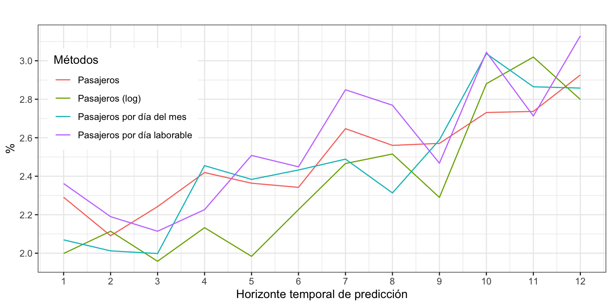
Antes de pasar al análisis de los resultados, indicar que en las predicciones sobre el logaritmo no se ha pedido corrección por sesgo, y que al trabajar con errores porcentuales no es necesario pasar la predicción de pasajeros por día (laborable o del mes) a predicción de pasajeros.
La Figura 11 muestra los errores de predicción según el horizonte temporal para las cuatro aproximaciones. En todos los casos el error aumenta con el horizonte temporal de predicción, de forma que las predicciones a doce meses vista tienen un error un punto porcentual superior a las predicciones a un mes vista.
Por otro lado, para horizontes temporales de hasta 9 meses vista las predicciones realizadas sobre el logaritmo de la serie original Pasajeros son de las más precisas, seguidas de las predicciones realizadas con Pasajeros por día del mes. Para predicciones de 10 a 12 meses, en general las mejores predicciones se obtienen con Pasajeros. En contra de lo esperado, las predicciones a partir de la serie de pasajeros por día laborable son de las que mayor error porcentual presentan.
4.3 Conclusión
Los modelos de Alisado exponencial resultan excelentes para predecir la serie Pasajeros. El error de ajuste, del 2.4%, es un punto inferior al error obtenido con el método ingenuo con estacionalidad. Además, en las predicciones extramuestrales a 12 meses vista el error porcentual sigue manteniéndose bajo, no superando el 4%.
La transformación logarítmica de la serie pasajeros y la serie Pasajeros por día del mes han dado mejores predicciones por Alisado exponencial que el análisis directo de la serie.
5 Modelos Arima
La aplicación de la metodología Arima a la serie Pasajeros implica un notable incremento en la complejidad de los modelos y en los requerimientos estadísticos, que solo está justificada si se reduce sustancialmente el error de predicción.
En los epígrafes previos hemos visto que la serie Pasajeros tiene una componente de intervención muy acusada, destacando el número de días del mes, el de días laborables, el fechado de la Semana Santa y que el día de Navidad caiga en lunes. Cabe espera, por tanto, que la incorporación de estos efectos calendario en el análisis de la serie incremente significativamente la calidad de ajuste y la capacidad predictiva. Veamos si es así.
5.1 Transformación de la serie Pasajeros
Por un lado, el análisis por Alisado exponencial ha puesto de relieve el carácter lineal de Pasajeros y la efectividad que podría tener usar la transformación logarítmica para mejorar la calidad de las predicciones.
Por otro lado, tras un análisis preliminar por modelos Arima se puede ver que la transformación logarítmica mejora la identificación del modelo y facilitaba su interpretación.
Así, optamos por aplicar la transformación logarítmica a Pasajeros.
Las FAC del logaritmo de la serie y algunas de sus diferenciaciones (Figura 12) indican que es necesaria la doble diferenciación regular y estacional para alcanzar las hipótesis de estacionariedad y ergodicidad: \(\log(Pasajeros) \sim I(1)I_{12}(1)\). Los resultados ofrecidos por las funciones ndiffs y nsdiffs apoyan esta conclusión.
ggAcf(log(Pasajeros), lag = 48, ylim = c(-1, 1),
xlab = "", ylab = "", main = "")
ggAcf(diff(log(Pasajeros)), lag = 48, ylim = c(-1, 1),
xlab = "", ylab = "", main = "")
ggAcf(diff(log(Pasajeros), lag = 12), lag = 48, ylim = c(-1, 1),
xlab = "", ylab = "", main = "")
ggAcf(diff(diff(log(Pasajeros), lag=12)), lag = 48, ylim = c(-1, 1),
xlab = "", ylab = "", main = "")
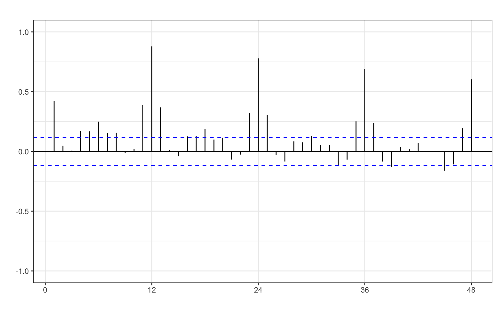
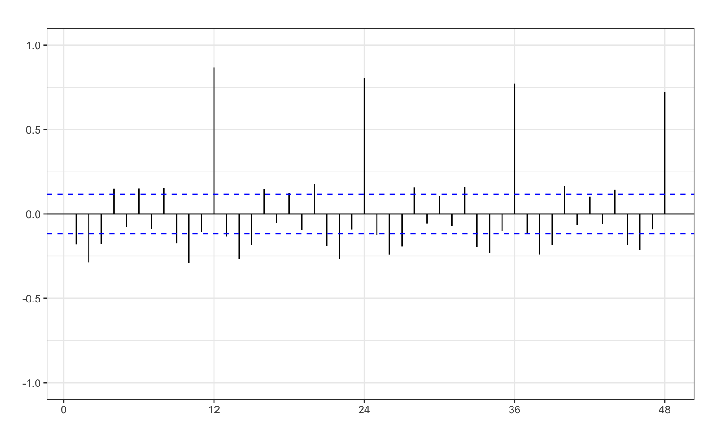
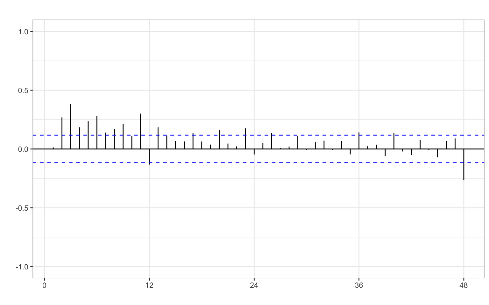
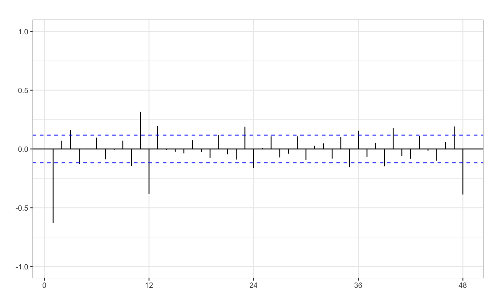
ndiffs(log(Pasajeros))[1] 1nsdiffs(log(Pasajeros))[1] 1La Figura 13 muestra la serie original \(y_t\) y la serie transformada \(\nabla \nabla_{12} \log(y_t)\). En la serie transformada destacan las compensaciones asociadas a la intervención de Semana Santa.
series <- cbind("Original" = Pasajeros,
"Dif reg. y est. de log" = diff(diff(log(Pasajeros), lag = 12)))
autoplot(series, facets = TRUE,
xlab = "",
ylab = "",
main = "")
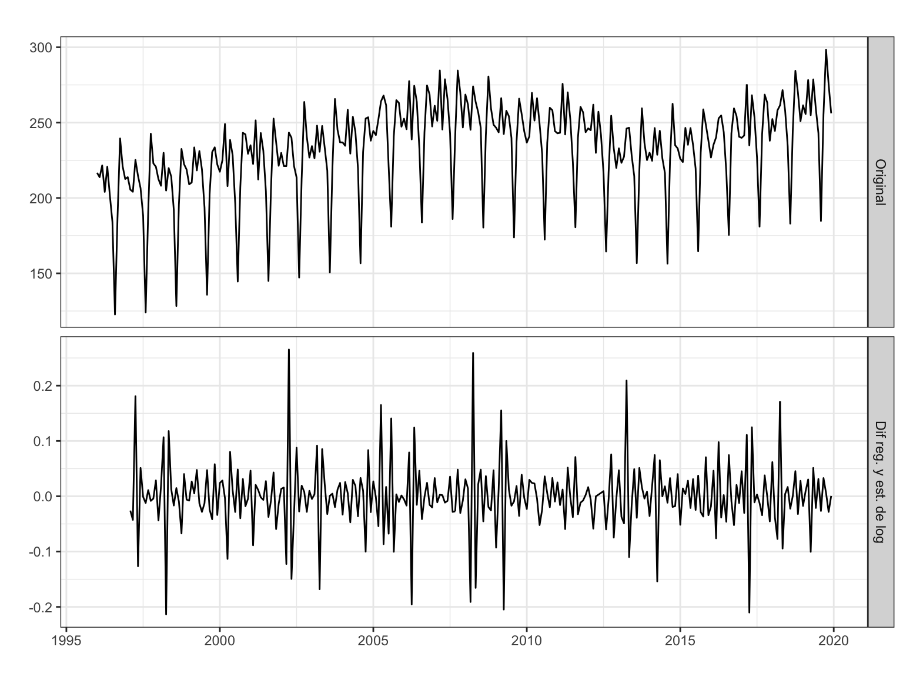
5.2 Identificación de la serie Pasajeros
Vamos a identificar los valores de \(p\), \(q\), \(P\) y \(Q\) del proceso Arima. Para ello, solicitaremos con auto.arima y seas una identificación automática, en el primer caso incluyendo todos los efectos calendario ya identificados.
Identificación automática con auto.arima
Para ayudar a la función auto.arima en el proceso de identificación vamos a definir previamente todas las variables de intervención que en el desarrollo del análisis de la serie hemos ido identificando: días del mes, días laborables del mes, meses de diciembre con el día de Navidad en lunes y Semana Santa:
- La variable Días laborables del mes ya ha sido definida previamente como DiasLaborables.
- La variable Días del mes se puede definir directamente con la función
monthdaysde la libreríaforecast. En lugar de días del mes, consideraremos la variable días no laborables del mes, resultante de restar a los días del mes los días laborables. - Los meses de diciembre en que el día de Navidad cae en lunes requiere un poco más de trabajo. La idea general es generar un rango de fechas diarias que cubra todo el periodo de análisis (variable fechas), identificar los lunes de Navidad (variable dicotómica lunesNavidad), eliminar el identificador del día del rango de fechas con la función
formaty, por último, contapplysumar para cada mes-año los lunes de Navidad, que lógicamente solo tendrán lugar algunos meses de diciembre y una sola vez. En los objetos definidos con la funciónas.POSIXltlos meses van de 0 a 11 (enero a diciembre) y los días de la semana de 0 a 6 (domingo a sábado). - La creación de las variables de intervención que estiman el efecto de la Semana Santa es aún más complejo. El efecto del viernes de Semana Santa ya queda recogido en la variable DiasNoLaborables. Lo que vamos a hacer ahora es crear una variable que permita estimar el efecto de las vacaciones escolares (y de muchos padres y madres) de lunes a Jueves Santo en aquellas comunidades donde así es; y otra variable para estimar el efecto de las vacaciones escolares que tienen lugar la semana posterior al Domingo de Resurrección, de lunes a viernes tras Semana Santa. Estas nuevas variables (DiasPreSanta y DiasPascua) para marzo y abril valdrán la proporción de días vacacionales que recaen en el correspondiente mes, y valdrán cero para los demás meses del año.
Días no laborables
Generamos la variables para DiasNoLaborables y se muestra su valor para los últimos 5 años.
DiasNoLaborables <- monthdays(DiasLaborables) - DiasLaborables
pDiasNoLaborables <- monthdays(pDiasLaborables) - pDiasLaborables
tail(DiasNoLaborables, n = 60) Jan Feb Mar Apr May Jun Jul Aug Sep Oct Nov Dec
2015 11 8 9 9 11 8 8 10 8 10 9 10
2016 12 8 9 9 9 8 10 9 8 11 9 11
2017 10 8 8 11 9 8 10 9 9 10 9 13
2018 9 8 10 9 9 9 9 9 10 9 9 12
2019 9 8 10 9 9 10 8 10 9 8 10 11Navidad cae en lunes
Generamos la variable que identifica los mes de diciembre en los que la Navidad cayó en lunes.
fechas <- as.POSIXlt(seq(from = as.Date("1996-1-1"),
to = as.Date("2024-12-31"),
by = "day"))
LunesNavidad <- 1*(fechas$wday == 1 & fechas$mon == 11 & fechas$mday == 25)
fechas <- format(fechas, format = "%Y-%m")
LunesNavidad <- tapply(LunesNavidad, fechas, sum)
LunesNavidad <- ts(LunesNavidad, start = 1996, frequency = 12)
pLunesNavidad <- subset(LunesNavidad, start = length(LunesNavidad) - 59)
LunesNavidad <- subset(LunesNavidad, end = length(LunesNavidad) - 60)
LunesNavidad[LunesNavidad == 1]2000-12 2006-12 2017-12
1 1 1 Semana Santa
Se generan las variables DiasPreSanta y DiasPascua y se muestra su valor para los últimos 5 años.
LunSanto <- Easter(1996:2024, shift = -6)
MarSanto <- Easter(1996:2024, shift = -5)
MieSanto <- Easter(1996:2024, shift = -4)
JueSanto <- Easter(1996:2024, shift = -3)
PreSanta <- c(LunSanto, MarSanto, MieSanto, JueSanto)
biz <- fechaDiaria[isBizday(fechaDiaria, holidays = PreSanta, wday = 0:6)]
bizdays <- format(biz, format = "%Y-%m")
DiasPreSanta <- table(bizdays)
DiasPreSanta <- ts(DiasPreSanta, start = 1996, frequency = 12)
DiasPreSanta <- (monthdays(DiasPreSanta) - DiasPreSanta)/4
pDiasPreSanta <- subset(DiasPreSanta, start = length(DiasPreSanta) - 59)
DiasPreSanta <- subset(DiasPreSanta, end = length(DiasPreSanta) - 60)
LunPascua <- Easter(1996:2024, shift = 1)
MarPascua <- Easter(1996:2024, shift = 2)
MiePascua <- Easter(1996:2024, shift = 3)
JuePascua <- Easter(1996:2024, shift = 4)
ViePascua <- Easter(1996:2024, shift = 5)
Pascua <- c(LunPascua, MarPascua, MiePascua, JuePascua, ViePascua)
biz <- fechaDiaria[isBizday(fechaDiaria, holidays = Pascua, wday = 0:6)]
bizdays <- format(biz, format = "%Y-%m")
DiasPascua <- table(bizdays)
DiasPascua <- ts(DiasPascua, start = 1996, frequency = 12)
DiasPascua <- (monthdays(DiasPascua) - DiasPascua)/5
pDiasPascua <- subset(DiasPascua, start = length(DiasPascua) - 59)
DiasPascua <- subset(DiasPascua, end = length(DiasPascua) - 60)
tail(DiasPreSanta, n = 60) Jan Feb Mar Apr May Jun Jul Aug Sep Oct Nov Dec
2015 0.0 0.0 0.5 0.5 0.0 0.0 0.0 0.0 0.0 0.0 0.0 0.0
2016 0.0 0.0 1.0 0.0 0.0 0.0 0.0 0.0 0.0 0.0 0.0 0.0
2017 0.0 0.0 0.0 1.0 0.0 0.0 0.0 0.0 0.0 0.0 0.0 0.0
2018 0.0 0.0 1.0 0.0 0.0 0.0 0.0 0.0 0.0 0.0 0.0 0.0
2019 0.0 0.0 0.0 1.0 0.0 0.0 0.0 0.0 0.0 0.0 0.0 0.0tail(DiasPascua, n = 60) Jan Feb Mar Apr May Jun Jul Aug Sep Oct Nov Dec
2015 0.0 0.0 0.0 1.0 0.0 0.0 0.0 0.0 0.0 0.0 0.0 0.0
2016 0.0 0.0 0.8 0.2 0.0 0.0 0.0 0.0 0.0 0.0 0.0 0.0
2017 0.0 0.0 0.0 1.0 0.0 0.0 0.0 0.0 0.0 0.0 0.0 0.0
2018 0.0 0.0 0.0 1.0 0.0 0.0 0.0 0.0 0.0 0.0 0.0 0.0
2019 0.0 0.0 0.0 1.0 0.0 0.0 0.0 0.0 0.0 0.0 0.0 0.0Ahora tenemos todos los elementos para pedir la identificación automática con auto.arima.
auto.arima(Pasajeros,
lambda = 0,
d = 1,
D = 1,
xreg = cbind(DiasLaborables, DiasNoLaborables,
LunesNavidad, DiasPreSanta, DiasPascua))Series: Pasajeros
Regression with ARIMA(0,1,1)(0,1,1)[12] errors
Box Cox transformation: lambda= 0
Coefficients:
ma1 sma1 DiasLaborables DiasNoLaborables LunesNavidad
-0.5775 -0.4194 0.0352 0.0159 0.028
s.e. 0.0496 0.0531 0.0057 0.0057 0.008
DiasPreSanta DiasPascua
-0.0577 -0.0248
s.e. 0.0042 0.0070
sigma^2 = 0.0003214: log likelihood = 718.25
AIC=-1420.51 AICc=-1419.97 BIC=-1391.58La identificación automática muestra el proceso de las aerolíneas. Además, parece que todas las variables de intervención son significativas.
Identificación automática con seas
La función seas de seasonal incluye automáticamente durante la identificación las variables de intervención necesarias.
summary(seas(Pasajeros, transform.function = "log"))
Call:
seas(x = Pasajeros, transform.function = "log")
Coefficients:
Estimate Std. Error z value Pr(>|z|)
Weekday 0.0053245 0.0002834 18.787 < 2e-16 ***
Easter[1] -0.0863100 0.0034777 -24.818 < 2e-16 ***
AR-Nonseasonal-01 -0.9566747 0.2791436 -3.427 0.00061 ***
AR-Nonseasonal-02 -0.5939742 0.1383640 -4.293 1.76e-05 ***
AR-Nonseasonal-03 -0.2879049 0.0881848 -3.265 0.00110 **
MA-Nonseasonal-01 -0.4666487 0.2885044 -1.617 0.10578
MA-Seasonal-12 0.3907450 0.0555134 7.039 1.94e-12 ***
---
Signif. codes: 0 '***' 0.001 '**' 0.01 '*' 0.05 '.' 0.1 ' ' 1
SEATS adj. ARIMA: (3 1 1)(0 1 1) Obs.: 288 Transform: log
AICc: 1635, BIC: 1663 QS (no seasonality in final): 0
Box-Ljung (no autocorr.): 52.54 *** Shapiro (normality): 0.9846 **En este caso el proceso identificado en la parte regular es más complejo que el obtenido con auto.arima, ARIMA(3,1,1)(0,1,1). Además, se han incluido variables de intervención asociadas a la Semana Santa y días laborables. Conjuntamente estas variables de intervención recogen los mismos efectos considerados por nosotros.
Concluimos que el modelo de partida para Pasajeros será \(\log(Pasajeros) \sim ARIMA_{12}(0, 1, 1)(0, 1, 1) + AI\).
5.3 Estimación del modelo e identificación de otras componentes de intervención
Vamos a estimar el modelo identificado y a analizar la presencia de otros valores atípicos en el residuo.
PasajerosAri <- Arima(Pasajeros,
lambda = 0,
order = c(0, 1, 1),
seasonal = c(0, 1, 1),
xreg = cbind(DiasLaborables, DiasNoLaborables,
LunesNavidad, DiasPreSanta, DiasPascua))
PasajerosAriSeries: Pasajeros
Regression with ARIMA(0,1,1)(0,1,1)[12] errors
Box Cox transformation: lambda= 0
Coefficients:
ma1 sma1 DiasLaborables DiasNoLaborables LunesNavidad
-0.5775 -0.4194 0.0352 0.0159 0.028
s.e. 0.0496 0.0531 0.0057 0.0057 0.008
DiasPreSanta DiasPascua
-0.0577 -0.0248
s.e. 0.0042 0.0070
sigma^2 = 0.0003214: log likelihood = 718.25
AIC=-1420.51 AICc=-1419.97 BIC=-1391.58error <- residuals(PasajerosAri)
sderror <- sd(error)
autoplot(error, series="Error",
colour = "black",
xlab = "",
ylab = "Error",
main = "") +
geom_hline(yintercept = c(-3, -2, 0, 2, 3)*sderror,
colour = c("red", "blue", "black", "blue", "red"),
lty = 2) +
scale_x_continuous(breaks= seq(1996, 2020, 2))
fechasMes[abs(error) > 3 * sderror][1] "2005-08"
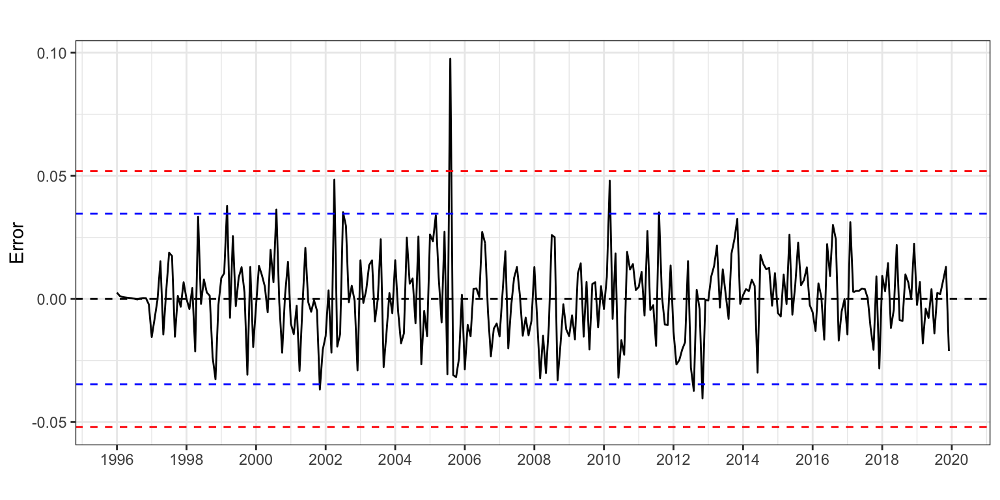
En la Figura 14 identificamos claramente agosto de 2005 como atípico, con un error que supera las cinco desviaciones típicas.
Tras incluir la correspondiente variable artificial en el modelo y estimarlo, identificamos otros valores extremos, por superar las 3 desviaciones típicas, en agosto de 2006, abril de 2002 y marzo de 2010. Procedemos a incluir las variables artificiales en el modelo y repetir el análisis. En esta ocasión ya no identificamos más valores atípicos (véase Figura 15).
d0402 <- 1*(trunc(time(Pasajeros)) == 2002 & cycle(Pasajeros) == 4)
d0805 <- 1*(trunc(time(Pasajeros)) == 2005 & cycle(Pasajeros) == 8)
d0806 <- 1*(trunc(time(Pasajeros)) == 2006 & cycle(Pasajeros) == 8)
d0310 <- 1*(trunc(time(Pasajeros)) == 2010 & cycle(Pasajeros) == 3)
PasajerosAri <- Arima(Pasajeros,
lambda = 0,
order = c(0, 1, 1),
seasonal = c(0, 1, 1),
xreg = cbind(DiasLaborables, DiasNoLaborables,
LunesNavidad, DiasPreSanta, DiasPascua,
d0402, d0805, d0806, d0310))
PasajerosAriSeries: Pasajeros
Regression with ARIMA(0,1,1)(0,1,1)[12] errors
Box Cox transformation: lambda= 0
Coefficients:
ma1 sma1 DiasLaborables DiasNoLaborables LunesNavidad
-0.5276 -0.3752 0.0343 0.0158 0.0259
s.e. 0.0539 0.0591 0.0051 0.0052 0.0072
DiasPreSanta DiasPascua d0402 d0805 d0806 d0310
-0.0579 -0.0253 0.0333 0.0644 0.0284 0.0377
s.e. 0.0042 0.0067 0.0130 0.0126 0.0126 0.0126
sigma^2 = 0.0002842: log likelihood = 737.61
AIC=-1451.23 AICc=-1450.03 BIC=-1407.82error <- residuals(PasajerosAri)
sderror <- sd(error)
autoplot(error, series="Error",
colour = "black",
xlab = "",
ylab = "Error",
main = "") +
geom_hline(yintercept = c(-3, -2, 0, 2, 3)*sderror,
colour = c("red", "blue", "black", "blue", "red"),
lty = 2) +
scale_x_continuous(breaks= seq(1996, 2020, 2))
fechasMes[abs(error) > 2.8 * sderror]character(0)
Antes de finalizar el proceso de identificación vamos a confirmar la significatividad de todos los parámetros estimados.
coeftest(PasajerosAri)
z test of coefficients:
Estimate Std. Error z value Pr(>|z|)
ma1 -0.5275620 0.0538773 -9.7919 < 2.2e-16 ***
sma1 -0.3751743 0.0591070 -6.3474 2.190e-10 ***
DiasLaborables 0.0342656 0.0051246 6.6865 2.285e-11 ***
DiasNoLaborables 0.0157855 0.0051814 3.0466 0.0023146 **
LunesNavidad 0.0258983 0.0072072 3.5934 0.0003264 ***
DiasPreSanta -0.0579159 0.0041802 -13.8548 < 2.2e-16 ***
DiasPascua -0.0252714 0.0066643 -3.7921 0.0001494 ***
d0402 0.0332966 0.0130224 2.5569 0.0105619 *
d0805 0.0644211 0.0126345 5.0988 3.418e-07 ***
d0806 0.0283617 0.0126198 2.2474 0.0246149 *
d0310 0.0377276 0.0126289 2.9874 0.0028135 **
---
Signif. codes: 0 '***' 0.001 '**' 0.01 '*' 0.05 '.' 0.1 ' ' 1
5.4 Validación del modelo
En el proceso de validación verificaremos si se cumplen las hipótesis básicas sobre el vector de residuos y analizaremos la calidad de ajuste y predicción del modelo estimado.
Incorrelación, Homocedasticidad y Normalidad
Veamos si el residuo es ruido blanco.
Box.test(error, lag = 2,type = "Ljung-Box")
Box-Ljung test
data: error
X-squared = 0.020802, df = 2, p-value = 0.9897Box.test(error, lag = 24,type = "Ljung-Box")
Box-Ljung test
data: error
X-squared = 25.067, df = 24, p-value = 0.4021Box.test(error^2, lag = 2, type = "Ljung-Box")
Box-Ljung test
data: error^2
X-squared = 3.5249, df = 2, p-value = 0.1716Box.test(error^2, lag = 24, type = "Ljung-Box")
Box-Ljung test
data: error^2
X-squared = 25.854, df = 24, p-value = 0.3606jarque.bera.test(error)
Jarque Bera Test
data: error
X-squared = 0.40002, df = 2, p-value = 0.8187El error muestra ser incorrelado, homocedástico y seguir una distribución normal.
Calidad del ajuste
Analizando los criterios de bondad de ajuste (sobre el error de predicción intramuestral a un periodo vista) se tiene un error medio (ME) de -0.05 millones de pasajeros, prácticamente cero por lo que no parece que haya sesgo en las predicciones; en media nos equivocamos 3.7 millones de pasajeros (RMSE) y el error porcentual medio (MAPE) es 1.3%, muy bajo. Para ambos indicadores de bondad de ajuste el error obtenido es la mitad que el visto con Alisado exponencial. Al contrario que para Alisado, el ajuste con modelos Arima generará predicciones por intervalo válidas.
ME RMSE MAE MPE MAPE MASE ACF1
Training set -0.05 3.72 2.92 0.01 1.26 0.35 0.02
Calidad de las predicciones
Se completará el proceso de validación estimado el error de predicción extramuestral según el horizonte temporal. Se considerarán 12 años para el periodo de estimación y un año para el de predicción.
k <- 144
h <- 12
T <- length(Pasajeros)
s<-T - k - h
mapeArima <- matrix(NA, s + 1, h)
X <- data.frame(cbind(DiasLaborables, DiasNoLaborables,
LunesNavidad, DiasPreSanta, DiasPascua))
for (i in 0:s) {
train.set <- subset(Pasajeros, start = i + 1, end = i + k)
test.set <- subset(Pasajeros, start = i + k + 1, end = i + k + h)
X.train <- as.matrix(X[(i + 1):(i + k),])
X.test <- as.matrix(X[(i + k + 1):(i + k + h),])
fit <- try(Arima(train.set,
lambda = 0,
order = c(0, 1, 1),
seasonal = c(0, 1, 1),
xreg=X.train),
silent = TRUE)
if (!is.element("try-error", class(fit))) {
fcast <- forecast(fit, h = h, xreg = X.test)
mapeArima[i + 1,] <- 100*abs(test.set - fcast$mean)/test.set
}
}
errorArima <- apply(mapeArima, MARGIN = 2, FUN = median, na.rm = TRUE)
round(errorArima, 2) [1] 1.09 1.12 1.32 1.52 1.51 1.46 1.66 1.87 2.12 2.02 2.21 2.59El error es creciente en el horizonte temporal de predicción. Para predicciones extramuestrales a un periodo vista vale 1.1%, algo superior al error de estimación, pero realmente bajo. Incluso para predicciones a doce meses vista, el error sigue siendo reducido, 2.6%. Recordemos que para Alisado exponencial el error a 12 meses vista era de 2.9%, muy similar.
5.5 Interpretación del modelo estimado
El modelo estimado y validado corresponde al modelo de las aerolíneas con intervención: \(ARIMA_{12}(0,1,1)(0,1,1) + AI\). La ecuación teórica completa del modelo es:
\[(1-L)(1-L^{12})\log(Pasajeros) = (1+\theta_1 L)(1 + \theta_{12} L^{12})\varepsilon_t+\]
\[\gamma_1 DiasLaborables +\gamma_2 DiasNoLaborables +\gamma_3 LunesNavidad+\]
\[\gamma_4 DiasPreSanta + \gamma_5 DiasPascua +\]
\[\gamma_6 d0402 +\gamma_7 d0805 +\gamma_8 d0806 +\gamma_9 d0310.\]
Si se desarrolla el modelo y se deja en función de la tasa de variación anual del número de pasajero, queda (la parte de intervención no cambia):
\[TVAPasajeros_t = TVAPasajeros_{t-1} + \theta_1 \varepsilon_{t-1} + \theta_{12} \varepsilon_{t-12}+ \theta_1 \theta_{12} \varepsilon_{t-13}+\varepsilon_t + AI.\]
Finalmente, el modelo estimado es:
\[\widehat{TVAPasajeros}_t = TVAPasajeros_{t-1} -0.53 \varepsilon_{t-1} -0.37 \varepsilon_{t-12}+ 0.20 \varepsilon_{t-13} +\]
\[0.034\cdot DiasLaborables +0.016\cdot DiasNoLaborables+ 0.026\cdot LunesNavidad\]
\[- 0.058\cdot DiasPreSanta - 0.025\cdot DiasPascua +\]
\[0.033\cdot d0402 +0.064\cdot d0805 +0.028\cdot d0806 +0.038\cdot d0310.\] Interpretación:
- La tasa de variación anual del número de pasajeros en transporte urbano para un mes dado es la misma que la observada en el mes previo.
- Si hace uno, doce o trece meses se observó un número atípico de pasajeros, se debe tener en cuenta para corregir la predicción.
- Cada día laborable adicional en un mes supone un incremento en el número de pasajeros del 3.4% y cada día no laborable un incremento adicional del 1.6%.
- Si la Navidad cae en lunes y por tanto Nochebuena en domingo, ese mes de diciembre el número de pasajeros será un 2.6% superior al de un mes de diciembre donde la Navidad no cae en lunes.
- El mes (marzo o abril) en que caigan los días laborables (lunes a jueves) de la Semana Santa el número de pasajeros se reducirá un 5.8% respecto de lo esperado.
- De la misma forma, el mes (marzo o abril) en que caigan los días laborables (lunes a viernes) de la semana posterior a Domingo de Resurrección el número de pasajeros se reducirá un 2.5% respecto de lo esperado.
- Ademas, para cuatro meses se observó una tasa de variación anual atípicamente superior a la esperada.
5.6 Predicción del número de pasajeros en transporte urbano
Una vez dado por válido el modelo, podemos pasar a realizar predicciones para los próximos años. Para las variables de intervención sujetas a fecha de calendario ya hemos ido creando sus valores previstos, para las demás los fijaremos a cero.
pPasajerosAri <- forecast(PasajerosAri,
h = 60,
xreg = cbind(pDiasLaborables, pDiasNoLaborables,
pLunesNavidad, pDiasPreSanta, pDiasPascua,
rep(0, 60), rep(0, 60),
rep(0 ,60), rep(0, 60)),
level = 95)
autoplot(pPasajerosAri,
xlab = "",
ylab = "",
main = "") +
scale_x_continuous(breaks= seq(1996, 2024, 4))
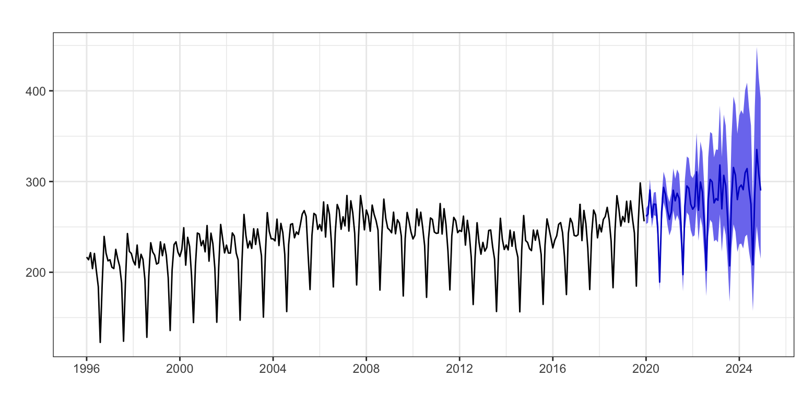
Así, en 2020 se esperan 3180 millones de pasajeros y para 2021 un total de 3247 millones de pasajeros.
6 Comparación entre modelos
Para finalizar este análisis, vamos a comparar la calidad de ajuste y de predicción de los tres modelos estimados en este ejemplo: el método ingenuo con estacionalidad, el método de Alisado exponencial y el modelo Arima.
Recordemos que el método ingenuo con estacionalidad tenía un error de ajuste (MAPE) del 3.5% o 11 millones de pasajeros (RMSE). Mientras que para el mejor modelo de Alisado exponencial obtenido (ETS(M,Ad,A)) se tiene un error del 2.4% equivalente a 7.5 millones de pasajeros. Por último, el modelo Arima presenta un error del 1.3% o 3.7 millones de pasajeros.
Claramente, el modelo de Alisado supone una mejora sustancial sobre el método ingenuo y el modelo Arima sobre el de Alisado, con una reducción, en este último caso, cercana al 50% en los dos indicadores de calidad contemplados.
Respecto de la calidad de las predicciones extramuestrales, la Figura 17 muestra los valores para el modelo de Alisado exponencial y Arima.
datos <- data.frame(
factor = c(rep("Alisado", 12),
rep("Arima", 12)),
x = c(1:12, 1:12),
y = c(errorAlisadoPas, errorArima)
)
ggplot(datos, aes(x = x, y = y, colour= factor)) +
geom_line() +
ggtitle("") +
xlab("Horizonte temporal de predicción") +
ylab("%") +
scale_x_continuous(breaks= 1:12) +
scale_y_continuous(breaks= seq(1.5, 4, .5)) +
labs(colour = "Métodos") +
theme(legend.position=c(0.1,0.8))
Con independencia del horizonte temporal, el error de previsión extramuestral del modelo Arima es menor que el error del modelo de Alisado exponencial, aunque la diferencia se reduce conforme aumenta el horizonte temporal de previsión. En concreto, para previsiones a un mes vista, Arima comete un error 1.2 p.p. menor que el Alisado, mientras que para predicciones a seis meses vista la diferencia es solo de 0.7 p.p. y para un horizonte de doce meses de 0.3 p.p.
El método Arima nos permite obtener las predicciones más precisas y además entender un poco mejor cuales son los determinantes del número de pasajeros en transporte urbano y su efecto sobre la serie. El método de Alisado exponencial permite obtener predicciones bastante buenas con una simple línea de código. La conveniencia de uno u otro método dependerá de la importancia que se dé a la calidad de las predicciones, la comprensión de los determinantes de la serie o la complejidad de la metodología, entre otros aspectos.
7 Estimación del efecto de la pandemia por Covid-19
La predicción de la serie Pasajeros obtenida con el modelo Arima (la más precisa de las obtenidas) nos va a permitir estimar el efecto que ha tenido la pasada pandemia sobre el uso del transporte urbano de pasajeros.
Un primer análisis gráfico muestra la gran caída en el número de pasajeros ocurrida en los primeros meses de la pandemia y la lenta recuperación a partir de junio de 2020. En los dos años siguientes, 2021 y 2022, el número de pasajeros se ha ido recuperando y en 2023 se alcanzan y superan los niveles de 2019. Parece que la reducción en el uso del transporte público debida al cambio en los hábitos de trabajo y transporte (trabajo desde casa, mayor uso de los vehículos de movilidad personal) se ha compensado con un aumento de la población que usa el transporte público y, de esta forma, se ha vuelto al nivel prepandemia.
Pasajeros <- read.csv2("./series/Pasajeros.csv",
header = TRUE)
Pasajeros <- ts(Pasajeros/1000,
start = 1996,
freq = 12)
ggseasonplot(window(Pasajeros, start = 2019)) +
ylab("") +
xlab("") +
ggtitle("") +
geom_point()
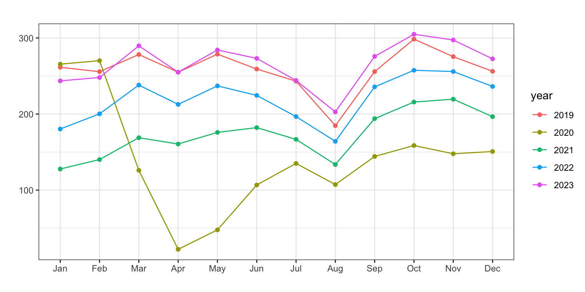
Según las previsiones obtenidas con el modelo Arima, en 2020 el número de pasajeros se redujo, respecto de los valores esperados en un mundo sin pandemia, en 1500 millones de pasajeros. En 2021 esta caída se había reducido y era solo de 1200 millones pasajeros, para pasar a solo 700 millones en 2022.
En 2023 las previsiones siguen 200 millones de pasajeros por encima de la realidad. Esta diferencia puede deberse a la acumulación de errores en la previsión a tan largo plazo. Pero también podría deberse a que la pandemia ha frenado la tendencia creciente en el número de pasajeros observada los años previos, de forma que los datos reales se ubican por debajo de las previsiones.
aggregate(Pasajeros - pPasajerosAri$mean, FUN = sum)Time Series:
Start = 2020
End = 2023
Frequency = 1
Pasajeros
[1,] -1497.8155
[2,] -1165.1229
[3,] -683.2922
[4,] -209.5952
8 Lista de funciones utilizadas
| Paquete | Funciones | Paquete | Funciones |
|---|---|---|---|
| base | abs | ggsubseriesplot | |
| as.Date | ggseasonplot | ||
| as.numeric | monthdays | ||
| as.POSIXlt | ndiffs | ||
| c | nsdiffs | ||
| cbind | remainder | ||
| class | snaive | ||
| colMeans | ggplot2 | aes | |
| colnames | geom_hline | ||
| colSums | geom_line | ||
| data.frame | geom_point | ||
| diff | ggplot | ||
| expression | ggtitle | ||
| is.element | guide_legend | ||
| length | guides | ||
| library | scale_colour_manual | ||
| list | scale_x_continuous | ||
| log | scale_y_continuous | ||
| matrix | theme | ||
| mean | theme_bw | ||
| names | theme_set | ||
| nrow | xlab | ||
| rbind | ylab | ||
| rep | knitr | kable | |
| round | lmtest | coeftest | |
| rownames | seasonal | seas | |
| seq | stats | aggregate | |
| subset | coef | ||
| summary | cycle | ||
| table | residuals | ||
| tapply | sd | ||
| trunc | stl | ||
| try | time | ||
| forecast | accuracy | ts | |
| Arima | vcov | ||
| auto.arima | timeDate | dayOfWeek | |
| autoplot | Easter | ||
| autolayer | format | ||
| easter | isBizday | ||
| ets | timeCalendar | ||
| forecast | timeSequence | ||
| ggAcf | utils | read.csv2 |